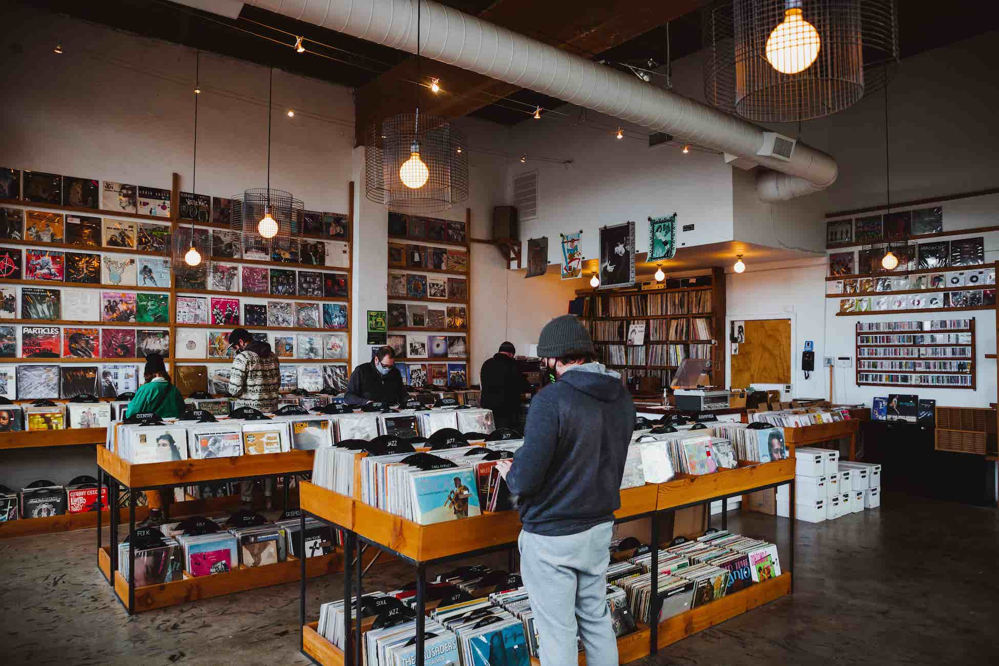

Find out a little more about us, how we do things and what we hope to do in the future.
Limited Press was born out of a love for music in its physical format and the community that is created from having a physical space to meet, browse and talk about our favourite bands and albums.
Diarmuid O’Riordan and Kevin O’Neill became friends in their teens through their mutual love for independent music back in the early 2000’s, regularly going to shows, reading music magazines and swapping CDs. At this point the music industry had started to change as the internet began to affect how people consumed their music and online retailers began to have a huge impact on the music retail industry with many independent shops disappearing over the course of a few short years.
By the time they were in their early twenties the vinyl revival began and it seemed that music would not be relegated to people’s phones and iPods. Music lovers and artists alike began to revisit the format as it gave them a means to have a physical representation of the music that could be cherished in a way no one could with an MP3 file.
With a little money and a lot of hard work Diarmuid and Kevin took it upon themselves to open a small record store specialising in vinyl records (and the occasional CD) that they believed would allow music fans to reconnect with each other in a physical space and directly support independent labels, shops and artists.
With time they began releasing limited runs, hence the name, of albums for independent bands as well as working towards reissuing some albums that they believed deserved to be heard again and in some cases albums that had never seen a vinyl release in an attempt to bring them to a new and appreciative audience.
Today Limited Press has over 10 releases to its name in the last two years and our shop has become a retail space that doubles as a venue for small in-store performances and events and hopefully will continue to find new ways to serve the independent music community.
The Limited Press office
We specialise in small, limited runs of vinyl release records for independent Irish and international artists. We believe that the record shop has a place on the shopping street and by adopting this format we bring a unique product that has been created by music lover for music lovers and our shop gives us a place where that can be celebrated.
We are a small business so we can’t always do what we would like but we are always open to new opportunities if we believe they have value and a place in our business model. We try to work with other independent labels around the world to act as a distributor or release partner to help artists around the world release their albums in the vinyl format that receive the best printing and audiophile qualities whether they are new releases or reissues.
Of course we love to work with Irish artists too and while we can’t offer something to everyone we encourage anyone to contact us to see how we can work together.
The Limited Press shop